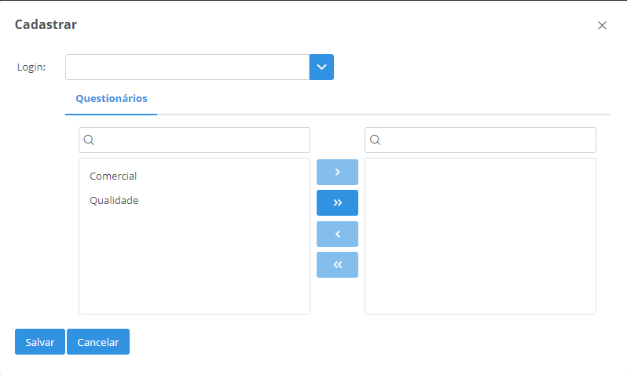

Básico
Usuários
Essa função tem como caracteristica cadastrar, alterar ou inativar usuários.

Principais Campos e Parâmetros:
Nome- Permite inserir o nome do usuário.Sobrenome- Permite inserir o sobrenome do usuário.Login- Permite inserir o login do usuário.Senha- Permite inserir a senha do usuário.E-mail- Permite inseris o e-mail do usuário.Usuário inativo- Permite inativar o usuário.-
Permissões- Permite selecionar as permissões que o usuário possuirá. -
Permissões Cadastros Básico:
- Usuários
- Estabelecimento
- Motivo
- Questionário
- Empresa
- Técnico
- Transportadores
- Mensanges
- Permissões Coleta Leite:
- Parâmetro Coleta Leite
- Tipo Veículo
- Propriedade
- Veículo
- Alterar Mapa Coleta
- Mapa de Propriedades
- Movimentos Leite
- Resumo por Rota
- Parâmetros Integração
- Série Mapa
- Rotas
- Cadastro Mapa Coleta
- Consulta Mapa Coleta
- Mapa Recebimento Leite
- Análise Leite Propriedades
- Resumo por Rota x Propriedade
- Rota x Propriedade
- Permissões Estabelecimentos:
- Na opção Estabelecimentos, possibilita o usuário selecionar os estabelecimentos que o usuário irá ter permissões.
Estabelecimento
Essa função tem como caracteristica cadastrar, alterar ou excluir estabelecimentos.

Principais Campos e Parâmetros:
Código- Permite inserir o código do estabelecimento.Razão Social- Permite inserir a razão social/nome do estabelecimento.Nome Fantasia- Permite inserir o nome fantasia do estabelecimento.Contato- Permite inserir o contato do estabelecimento.Documento- Permite inserir o documento do estabelecimento.Insc Estadual- Permite inserir a inscrição estadual do estabelecimento.Insc Municipal- Permite inserir a inscrição municipal do estabelecimento.Nascimento/Fundação- Permite inserir a data de fundação do estabelecimento.Regime Especial- Permite inserir o regime especial do estabelecimento.Endereço- Permite inserir o endereço do estabelecimento.Número- Permite inserir o número do estabelecimento.Bairro- Permite inserir o bairro do estabelecimento.Complemento- Permite inserir o complemento do estabelecimento.Estado- Permite selecionar o estado que será estabelecido para o * `estabelecimento.Cidade- Permite selecionar a cidade que será estabelecida para o * `estabelecimento.CEP- Permite inserir o CEP da cidade.Latitude- Permite inserir a latitude de localização.Longitude- Permite inserir a longitude de localização.Email- Permite inserir o e-mail que será estabelecido para o estabelecimento.Telefone- Permite inserir o telefone que será estabelecido para o * `estabelecimento.Ambiente Integração- Permite informar o ambiente de integração do * `estabelecimento com sistema externo.Layout Etiqueta- Permite inserir o layout para as etiquetas a serem impressas em * `impressora Zebra.Imagem- Permite inserir o logotipo para impressão de relatórios
Sincronizar Cadastro: Ao selecionar esta opção é possível sincronizar os cadastros de transportadores com sistemas externos, de acordo com as parametrizações informadas nos “Parâmetros de Integração”.
Importar arquivo: Para sincronizar os cadastros com um arquivo são necessários requisitos para que essa função seja bem-sucedida.
Gerar Senha: Ao pressionar este botão será possível gerar senha para as propriedades do estabelecimento com o código do produtor. As senhas serão geradas apenas para propriedades que não possuirem senha cadastrada.
A opção Integra Arquivo na função Parâmetros Coleta Leite deve ser marcada. O arquivo deve ser salvo em .txt com o nome de estabelecimento e deve seguir o layout abaixo para que a sincronização seja realizada.
codigo;cnpj;razaosocial;nomefantasia;endereco;numero;complemento;pontoreferencia;codmunicipioibge;cidade;estado;uf;pais;bairro;cep;inscricaoestadual;telefone;celular;email;inscricaomunicipal;latitude;longitude
2016;9999999999999;Estabel RF teste importação;RF;RF Solution IT;SN;;;4113601;Lobato;Paraná;PR;Brasil;Centro;86790-000;9999999999;4432498015;;;9999999999;-23,0076315;-51,9421515
1109;9999999999999;Estabel PP teste importação;PP;RF Solution IT;SN;;;3541406;Presidente Prudente ;Santa Catarina;SC;Brasil;Centro;19010-030;9999999999;441821013922;;;9999999999;-23,0369160;-51,9144902
Técnicos
Essa função tem como caracteristica cadastrar, alterar ou excluir técnicos.
Importante: Para cadastro do técnico é necessário realizar antes o cadastro de usuário.

Principais Campos e Parâmetros:
Login- Permite informar o login do usuário.Questionários- Permite selecionar os questionários que estará disponível para os técnicos.
Motivos
Essa função tem como caracteristica cadastrar, alterar ou excluir motivos de não coleta.

Principais Campos e Parâmetros:
Descrição- Permite inserir a descrição do motivo.Coleta Leite- Permite marcar a opção se o motivo irá pertencer à coleta.
Parâmetro Coleta Leite
Essa função tem como caracteristica informar os parâmetros básicos de funcionamento do sistema de coleta.

Principais Campos e Parâmetros:
Dias Bloqueio Produtor- Permite informar o número de dias para bloqueio de propriedades que não houve entregas de leite.Distância Mínima Salvar Trajetória (metros)- Permite informar a distância mínima em metros para salvar trajetória no aplicativo de coleta.Tempo Atualização GPS (milissegundos)- Permite informar o tempo de atualização do GPS no aplicativo de coleta.Valida Raio Localização- Permite informar se será validado o raio de localização da propriedade durante a coleta de leite.Criar Mapa Coleta automaticamente- Permite informar se será criado mapa de coleta automaticamente quando solicitada através do aplicativo de coleta.Distância mínima raio coleta (metros)- Permite inserir a distância mínima exigida para o raio de coleta, se a opção “Valida Raio Localização” estiver marcada.Distância Atualização GPS (metros)- Permite informar a distância de atualização do GPS no aplicativo de coleta.Utiliza Impressora Mobile- Permite informar se o aplicativo de coleta irá utilizar impressora Mobile.Distância máxima raio filtro propriedades (metros)- Permite informar a distância máxima do filtro de propriedades no aplicativo de coleta.Integra Arquivo- Permite marcar caso a sincronização for feita através de arquivos do seu diretório.
Parâmetros Integração
Essa função tem como caracteristica informar os parâmetros de integração com outros sistemas.

Principais Campos e Parâmetros:
Parceiro Integração- Permite informar qual o parceiro de Integração será utilizado.Rotina Integração- Permite informar qual a rotina de integração será cadastrada.URL- Permite informar a URL de integração.URL Teste- Permite informar a URL do ambiente Teste para integração.Usuário- Permite informar o usuário de autenticação.Senha- Permite informar a senha de autenticação.Token- Permite informar um token de autenticação quando utilizado.Parâmetros- Permite informar parâmetros extras de integração.
Tipo Veículo
Essa função tem como caracteristica cadastrar, alterar e excluir os tipos de veículos.

Principais Campos e Parâmetros:
Descrição- Permite inserir a descrição do tipo de veículo.
Série Mapa
Essa função tem como caracteristica cadastrar, alterar e excluir as séries mapas.

Principais Campos e Parâmetros:
Estabelec- Permite selecionar o estabelecimento que irá pertencer a série.Número- Permite inserir o número da série.Sequencia- Permite inserir a sequência da série.